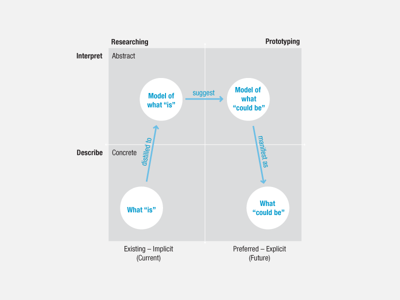
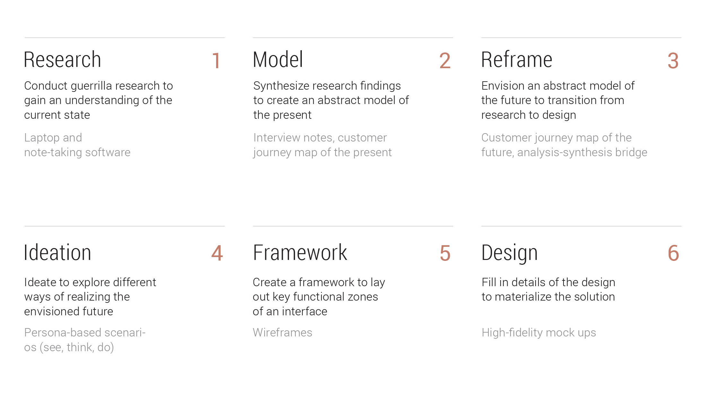

Client: Carnegie Mellon University
Duration: one week, 2017
Team: angel Yu and Nila Banerjee
my role: research, synthesis, responsive web design
Design Process
Process Overview
The key of this project lies in reframing an existing problem, which lies in the middle between research and design. We followed a four step design process based on the Analysis-Synthesis Bridge Model (picture below, image courtesy of Hugh Dubberly, Shelley Evenson and Rick Robinson). The model shows the designer moving between analysis (thinking) and synthesis (making), and between abstract and concrete ideation.
Based on the Analysis-Synthesis Model and using my own experience, I created the chart below to outline specific actions and tools involved in each stage. Steps 1–4 corresponds with the four quadrants of the Analysis-Synthesis Model (reading from bottom left to upper left, then moving to bottom right). Steps 5–6 are additional steps necessary in the making of concrete deliverables. The purpose of creating my own version of the design process is to think through the goals and hows' of each step, so that they can be examined for future applications.
Understanding
"What Is"
The first step was gaining a detailed understanding of the current landscape. We used directed storytelling to learn about the students’ experience, from the time they learn of their acceptance through when they arrive on campus. Some of the starter phrases we used include: “Tell me about your trip to Carnegie Mellon”, “What did you do to prepare for school?” and “How did you travel to campus?” We learnt that everyone had experienced some sort of issues with transitioning to campus. To disentangle ourselves from the wildly interesting details, we used sticky notes to synthesize individual's experiences.
Modeling and Scoping
the Problem Space
The next step was moving from individualized, concrete experiences, to an abstract model of the present. We achieved this by creating a journey map of the students' experience to getting to Carnegie Mellon. This map shows all the various incidents students had trouble with during different stages of the journey, and we knew that solving for everything was not the right direction. We decided to focus on emergency housing situations, as these turned out to be one of the main stressors students experience.
A customer journey map allowed for capture of students' major pain points in their difference phases of getting to Carnegie Mellon
What If...?
From here on we set free our imagination and started reframing the housing experience.
FIRST TRY
(Issue) people feel burdened to make a decision with consequences.
(Reframe) people do not make decisions but are assigned to houses.
SECOND TRY
(Issue) the move in process has a lot of painful bumps (problems with housing, utilities, and unexpected issues)
(Reframe) bumps are not painful but opportunities for new/fun experiences.
THIRD TRY
(Issue) people have a hard time disposing of and buying furniture.
(Reframe) people do not own furnitures but rent them for a certain period of time.
FOURTH TRY
(Issue) people make decisions on limited resources of info, thereby limiting their option. (Reframe) people have more resources/information.
FIFTH TRY
(Issue) housing is a pain.
(Reframe) housing is fun/exciting.
Ideation: Airbnb Among
University Students
We liked our second reframe the best and decided to go with this direction (issue: the move in process has a lot of painful bumps; reframe: bumps are not painful but opportunities for new/fun experiences.) We generated 3 possible solutions this reframe might take shape. From here, we decided on "Airbnb amongst current and incoming students" as our best idea. We used scenarios to validate our idea: in one of them below, Allen can’t move into his apartment because the wall fell off. Allen signs up for CMUxAirBnB through a website. Now, Allen pays $x to stay with another student for two nights while his apartment is fixed.
Using a see-think-do framework for our scenarios, we sought to consider students' experience in multiple layers as they occur in real life.
Visioning the
Improved Future
Basing off our concept, we created a second journey map which demonstrates an improved housing experience. This map takes Allen, our CMU student, through a housing crisis in which he utilizes the proposed solution to save himself. Allen’s emotions have improved significantly in this envisioned future. He experiences less swings in positive and negative feelings, and progresses relatively stable towards a positive state.
An envisioned customer journey which considers a student's thoughts and actions as he uses our designed solution.
Framework and
Visual Design
When a student lands on the homepage, they are briefly introduced to the emergency housing service through descriptions and user stories. They are prompted to book a room, which directs them to the next page where they can browse available options. Once a room is selected, they can read more about it and book a reservation. The last page demonstrates a confirmation with more links to explore. The experience is optimized for mobile.
Final Thoughts
Reframing can be both hard and scary. It is helpful to look at the reframing process by asking “what if” questions. “What if housing experiences were fun instead of anxiety-inducing?” “What if students are guaranteed a place to live in all instances of emergency?” “What if students are relieved of the responsibility of finding their place.” I empathize very much with the saying that language shapes thoughts just as much as thoughts shape language. Using brainstorm phrases such as "what if's" freed us of pre-conceived notions and gave us the first foothold into the unknown.
Your might also like
facilitating trust for service robots at home
Designing for value co-creation via mobile
© 2016 made by angel shi yao Yu